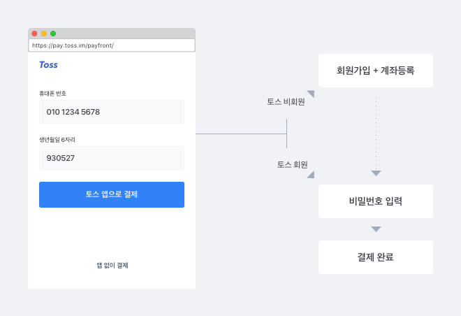
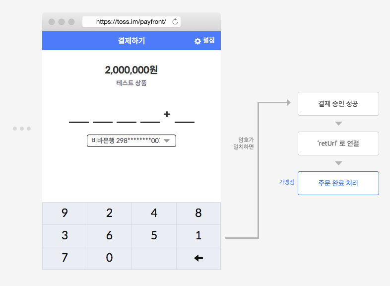
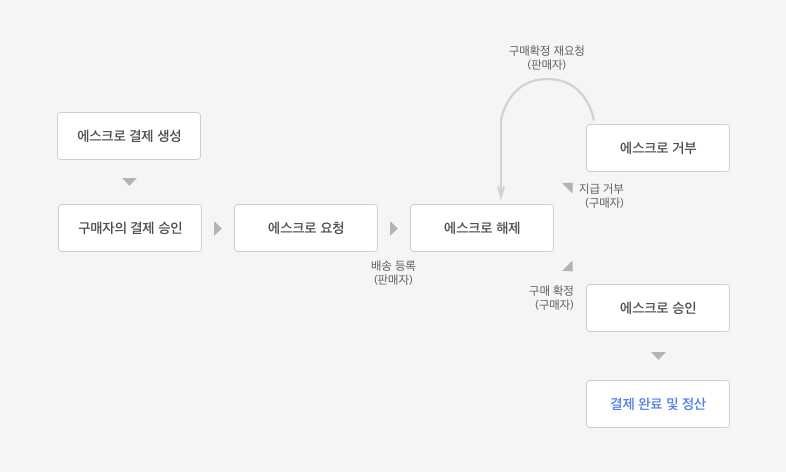

가입부터 결제 완료까지
0. 당신은 온라인 상점 '토스몰'을 열었습니다.
당신은 티셔츠를 파는 온라인 상점 '토스몰'을 열었습니다.
물건을 구매하려는 손님에게 어떻게 돈을 받을지 고민하던 당신, 여러 결제 서비스를 보며 고민하다가 개발이 쉽고 손님들도 편하게 쓸 수 있는 '토스 결제 서비스'를 써보기로 합니다.
1. 토스 가맹점 계정을 만듭니다.
먼저 가입 문의를 통해 가맹점 가입을 신청합니다. 가입 승인이 완료되면 가맹점 계정이 발급되고, 가맹점 관리자에 로그인하여 상점을 등록할 수 있습니다.
당신은 안내에 따라 정보를 입력하고 상점 '토스몰 (가칭)'을 생성합니다. 생성이 완료되면 상점 '토스몰'의 API Key가 발급됩니다. (발급받은 API Key는 '가맹점 관리자 > 상점 정보'에서 확인할 수 있습니다)
발급된 상점 API Key는 결제 생성 / 환불 등 모든 거래에서 인증 수단으로 활용합니다.
API Key가 외부에 유출되면 원치않는 결제 생성이나 환불 처리가 발생하여 금전적인 손실이 발생할 수 있습니다. API key가 웹사이트에 노출되거나 외부인에게 유출되지 않도록 주의해주세요.
발급되는 API Key는 두 가지입니다. (테스트용 / 실거래용) 두 Key는 아래와 같은 차이가 있습니다.
- 테스트용 Key : 이 Key를 사용하면 결제의 모든 과정이 실제 결제와 동일하게 진행됩니다. 통장에서 결제 금액이 '출금'되는 것만 빼고요. 돈 빠져나갈 걱정 없이 마음껏 테스트해볼 수 있기 때문에 개발 시 유용하게 사용할 수 있습니다.
- 실거래용 Key : 이 Key를 사용해야 진짜 '출금'되는 결제를 할 수 있습니다. 상점에 오신 손님과 결제를 진행할 땐 꼭 이것을 사용해야 합니다.
토스 결제를 한번 테스트 해보고싶지만 당장 가입하긴 귀찮다면, 아래 테스트용 Key를 사용하세요.
2. 토스몰에 첫 손님 등장 - 토스 결제 생성을 요청합니다.
'홍길동'씨는 토스몰을 둘러보다가 35,000원짜리 '토스 티셔츠'를 선택하여 결제를 요청합니다. 이 때 토스몰은 토스 결제 서버에게 '결제 생성'을 요청해야합니다. 결제 생성 API를 호출하세요!
POST https://pay.toss.im/api/v1/payments
'홍길동'씨의 결제는 아래와 같이 요청합니다.
curl https://pay.toss.im/api/v1/payments \ -H "Content-Type: application/json" \ -d '{ "orderNo":"1", "amount":35000, "amountTaxFree":0, "productDesc":"토스티셔츠", "apiKey":"sk_test_apikey1234567890", "autoExecute":false, "retUrl":"http://YOUR-SITE.COM/ORDER-CHECK" }'URL url = null; URLConnection connection = null; StringBuilder responseBody = new StringBuilder(); try { url = new URL("https://pay.toss.im/api/v1/payments"); connection = url.openConnection(); connection.addRequestProperty("Content-Type", "application/json"); connection.setDoOutput(true); connection.setDoInput(true); org.json.simple.JSONObject jsonBody = new JSONObject(); jsonBody.put("orderNo", "2015072012211"); jsonBody.put("amount", 35000); jsonBody.put("amountTaxFree", 0); jsonBody.put("productDesc", "토스티셔츠"); jsonBody.put("apiKey", "sk_test_apikey1234567890"); jsonBody.put("autoExecute", false); jsonBody.put("retUrl", "http://YOUR-SITE.COM/ORDER-CHECK"); BufferedOutputStream bos = new BufferedOutputStream(connection.getOutputStream()); bos.write(jsonBody.toJSONString().getBytes()); bos.flush(); bos.close(); BufferedReader br = new BufferedReader(new InputStreamReader(connection.getInputStream())); String line = null; while ((line = br.readLine()) != null) { responseBody.append(line); } br.close(); } catch (Exception e) { responseBody.append(e); } System.out.println(responseBody.toString());$arrayBody = array(); $arrayBody["orderNo"] = "2015072012211"; $arrayBody["amount"] = 10000; $arrayBody["amountTaxFree"] = 0; $arrayBody["productDesc"] = "토스티셔츠"; $arrayBody["apiKey"] = "sk_test_apikey1234567890"; $arrayBody["autoExecute"] = false; $arrayBody["retUrl"] = "http://YOUR-SITE.COM/ORDER-CHECK"; $jsonBody = json_encode($arrayBody); $ch = curl_init('https://pay.toss.im/api/v1/payments'); curl_setopt($ch, CURLOPT_CUSTOMREQUEST, "POST"); curl_setopt($ch, CURLOPT_SSL_VERIFYPEER, false); curl_setopt($ch, CURLOPT_POSTFIELDS, $jsonBody); curl_setopt($ch, CURLOPT_RETURNTRANSFER, true); curl_setopt($ch, CURLOPT_HTTPHEADER, array( 'Content-Type: application/json', 'Content-Length: ' . strlen($jsonBody)) ); $result = curl_exec($ch); curl_close($ch); echo "Response: ".$result;
위 예제에서 알 수 있듯이 '결제 생성'을 위해서는 7가지 설정값을 담아 토스에 요청해야합니다.
- orderNo (상점 주문번호) : 추후 상점 주문 정보와 결제 정보를 매칭하기 위해 필요
- amount (결제 금액) : 손님으로부터 받을 금액
- amountTaxFree (비과세 금액) : 손님으로부터 받을 금액중 비과세 금액
- productDesc (상품 정보) : 결제할 상품에 대한 정보 (상품명)
- apiKey (상점 API Key) : 이곳에 '테스트용 Key'를 넣으면 테스트 결제가, '실거래용 Key'를 넣으면 진짜 출금되는 결제가 생성됩니다.
- autoExecute (자동 승인 설정) : false로 설정할 것을 권장합니다. 이 값을 true로 설정할 경우, 가맹점의 최종 승인 과정 없이 결제가 자동 완료됩니다.
- retUrl (인증 완료 후 연결할 URL) : 구매자가 결제 인증을 완료하면 이 곳에 입력한 URL로 연결해드립니다. 일반적으로 '가맹점의 최종 승인을 대기' 하는 페이지를 이곳에 넣습니다.
앞서 말씀 드렸듯, API Key는 절대 유출되어선 안됩니다. 결제 요청 내용이 웹페이지에 그대로 드러나지 않게 다시 한번 주의해주세요!
요청하신 결제 생성이 무사히 완료되면, 토스는 아래와 같이 응답합니다.
{"code":0,"checkoutPage":"https://pay.toss.im/payfront/auth?payToken=test_token1234567890
&retUrl=http://YOUR-SITE.COM/ORDER-CHECK","payToken":"test_token1234567890"}code '0'은 결제 생성에 '성공'했음을 나타냅니다.
checkoutPage는 생성된 결제를 진행할 웹페이지 URL입니다. (구매자를 이 URL로 보내주세요)
payToken 값은 생성된 결제건의 고유번호입니다. 결제를 진행할 때, 결제를 취소하거나 환불할 때, 결제의 현재 상태를 파악할 때 이 고유번호를 통해 해당 결제 건에 접근하게 되니 잘 보관해주세요!
3. 구매자 승인 받기
Toss 결제 진행은 간단합니다. 결제 생성 시 응답으로 받은 'checkoutPage' URL로 구매자를 보내주시기만 하면 됩니다.
위 예제의 checkoutPage는 아래와 같습니다. (매 결제마다 다른 URL이 발급됩니다)
https://pay.toss.im/payfront/auth?payToken=test_token1234567890
&retUrl=http://YOUR-SITE.COM/ORDER-CHECK그 후, 결제 승인까지의 모든 과정은 토스가 알아서 해드립니다. (결제에 사용할 계좌번호를 받고, 계좌의 유효성을 검증하고, 계좌의 주인인지 철저히 알아보는 등...)
올바른 URL로 연결하셨다면 홍길동님은 아래와 같은 화면을 통해 결제를 진행하게 됩니다. 
2. 홍길동님이 토스 결제를 써봤다면 : 전화번호와 암호를 입력하면 결제 완료 (보안상 필요 시 ARS 인증을 거칩니다)
직접 경험해보고 싶으시다면... >> 결제 데모 페이지 바로가기
앱내 웹뷰 연동 가이드 사용자의 결제 승인을 위해 토스 앱을 띄우고자 하신다면 아래와 같은 구현이 필요합니다.
Android
- App 설정에서 supertoss:// scheme을 허용
- toss 결제 웹페이지 → 가맹점 native app 통신을 위한 javascript interface 구현
- interface name: TossPaymentInterface
- method : checkTossAppInstall(string)
-
결제 브릿지페이지가 안드로이드 웹뷰에서 열렸을 경우 위의 인터페이스 method를 호출합니다.
위의 method를 호출하였을때의 기대하는 동작은 다음과 같습니다.
"supertoss://" 앱스킴을 가진 Toss 앱이 사용자의 device에 설치여부에 따라 다음 javascript 함수 호출
- Toss 앱 설치: callbackOnTossAppInstalled() 호출
- Toss 앱 미설치: callbackOnTossAppNotyet() 호출
-
Interface 등록 예제
-
webView.addJavascriptInterface(new TossPaymentJavascriptInterface(), "TossPaymentInterface");public class TossPaymentJavascriptInterface { .... @JavascriptInterface public void checkTossAppInstall(String tossScheme) { //TODO implement : "supertoss://" 스킴 값 또는 tossScheme 값을 이용하여 사용자의 // device에 토스 앱이 설치되어있는지를 확인 후 설치 유무에 따른 callback 호출을 구현 ... } } - Android Interface reference
-
- App 설정에서 supertoss:// scheme을 허용
- toss 결제 웹페이지 → 가맹점 native app 통신을 위한 evaluate javascript interface 구현
- method: checkTossAppInstalledHandler(string)
-
결제 브릿지페이지가 아이폰 앱의 웹뷰에서 열렸을 경우 위의 인터페이스 method를 호출합니다.
위의 method를 호출하였을때의 기대하는 동작은 다음과 같습니다.
"supertoss://" 앱스킴을 가진 Toss 앱이 사용자의 device에 설치여부에 따라 다음 javascript 함수 호출
- Toss 앱 설치: callbackOnTossAppInstalled() 호출
- Toss 앱 미설치: callbackOnTossAppNotyet() 호출
- Sample Project
참고 : nonPersistent WKWebsiteDataStore
-
가맹점 native app -> toss 결제 웹페이지 (토스 앱이 설치된 사용자)
- method: callbackOnTossAppInstalled()
-
사용자의 mobile device에 토스 App이 설치되었을때 토스 앱을 띄우는 함수입니다.
해당 함수가 호출되면 supertoss:// 스킴을 이용해 새탭에서 앱을 여는 시도와 함께 결제 대기 페이지로 사용자를 이동시키게 됩니다.
-
가맹점 native app -> toss 결제 웹페이지 (토스 앱 미설치 사용자)
- method: callbackOnTossAppNotyet()
- 사용자의 mobile device에 토스 App이 미설치되어 있다고 판단한 경우 호출하는 함수입니다. 이 함수를 호출할 경우 os에 맞는 마켓 설치 페이지 - 안드로이드는 플레이마켓, ios는 앱스토어 - 로 사용자를 이동시킵니다.
4. 구매자 승인 완료
아래 그림과 같이, 홍길동님이 결제 암호를 잘 입력하면 구매자 승인이 완료됩니다. 그러면 토스는 결제 생성 시 넘겨주신 'retUrl'로 홍길동님을 보내드립니다. 
retUrl로 홍길동님을 보내면서, 주문 번호 (orderNo)와 승인 결과 (status) query string 파라미터로 함께 보내드립니다. 예시는 다음과 같습니다.
http://YOUR-SITE.COM/ORDER-CHECK?orderNo=1&status=PAY_APPROVED여기서 status 값을 확인해주세요.
- 승인 완료한 경우 : ?status=PAY_APPROVED
- 결제를 취소한 경우 : ?status=PAY_CANCEL
결제를 취소한 경우에는 결제 취소 안내 화면을 보여주시고, 승인 완료한 경우엔 다음 단계 - 가맹점 최종 승인을 진행합니다.
5. 가맹점 최종 승인
홍길동님은 결제를 승인했지만, 아직 결제가 완료된 상태는 아닙니다. '토스몰'의 최종 승인 단계가 남아있습니다.
최종 승인 전, 토스몰은 토스티셔츠의 재고가 충분한지 다시 한번 확인하고 문제가 없음을 확인한 후 '승인 요청'을 보내고자 합니다.
POST https://pay.toss.im/api/v1/execute
결제 승인 요청은 아래와 같이 '상점 API key'와 'payToken'값을 담아 보냅니다.
curl https://pay.toss.im/api/v1/execute \ -H "Content-Type: application/json" \ -d '{ "apiKey":"sk_test_apikey1234567890", "payToken":"test_token1234567890" }'URL url = null; URLConnection connection = null; StringBuilder responseBody = new StringBuilder(); try { url = new URL("https://pay.toss.im/api/v1/execute"); connection = url.openConnection(); connection.addRequestProperty("Content-Type", "application/json"); connection.setDoOutput(true); connection.setDoInput(true); org.json.simple.JSONObject jsonBody = new JSONObject(); jsonBody.put("apiKey", "sk_test_apikey1234567890"); jsonBody.put("payToken", "test_token1234567890"); BufferedOutputStream bos = new BufferedOutputStream(connection.getOutputStream()); bos.write(jsonBody.toJSONString().getBytes()); bos.flush(); bos.close(); BufferedReader br = new BufferedReader(new InputStreamReader(connection.getInputStream())); String line = null; while ((line = br.readLine()) != null) { responseBody.append(line); } br.close(); } catch (Exception e) { responseBody.append(e); } System.out.println(responseBody.toString());$arrayBody = array(); $arrayBody["apiKey"] = "sk_test_apikey1234567890"; $arrayBody["payToken"] = "test_token1234567890"; $jsonBody = json_encode($arrayBody); $ch = curl_init('https://pay.toss.im/api/v1/execute'); curl_setopt($ch, CURLOPT_CUSTOMREQUEST, "POST"); curl_setopt($ch, CURLOPT_SSL_VERIFYPEER, false); curl_setopt($ch, CURLOPT_POSTFIELDS, $jsonBody); curl_setopt($ch, CURLOPT_RETURNTRANSFER, true); curl_setopt($ch, CURLOPT_HTTPHEADER, array( 'Content-Type: application/json', 'Content-Length: ' . strlen($jsonBody)) ); $result = curl_exec($ch); curl_close($ch); echo "Response: ".$result;
토스몰의 승인 요청을 받으면 토스 결제 서버는 먼저 구매자의 승인이 정말 완료되었는지 다시 한번 확인합니다. (구매자가 악의적으로 URL 변조를 통해 승인 완료인 척 했다면 여기서 결제가 중지됩니다)
승인이 완료된 것을 확인한 후, 구매자의 결제 계좌에서 결제 금액을 출금합니다. 출금이 완료되면 승인 요청에 대한 응답을 토스몰로 보냅니다.
{"code":0}'성공'을 의미하는 '0' 코드를 받으셨다면, 결제를 완료 처리하고 구매자를 결제 완료 페이지로 안내해주세요.
실패를 의미하는 '-1' 코드를 받으셨거나, 응답을 받지 못했다면 결제를 완료 처리하지 마십시오.
다시 한번 말씀드리지만, 결제 승인 API 요청의 응답이 '성공' (코드 0)인지 반드시 확인하셔야 합니다.
계좌 잔액 부족이나 구매자의 URL 변조가 확인되어 '실패' (코드 -1)응답을 받을 수 있습니다. 응답을 확인하지 않고 결제 완료 처리하는 경우, 결제는 실패했으나 물품은 발송되어버릴 수도 있으니 주의하세요!
결제 상태가 명확하지 않거나 다시 한번 확인하고 싶다면 '결제 상태 확인 API'를 통해 결제 상태를 조회하세요.
결제 생성하기
결제 생성 요청에 대해 좀 더 자세히 알아봅니다. 아래 예제는 결제 생성 API가 지원하는 모든 파라미터를 사용한 코드입니다.
curl https://pay.toss.im/api/v1/payments \
-H "Content-Type: application/json" \
-d '{
"orderNo":"1", # 토스몰 고유의 주문번호 (필수)
"amount":35000, # 결제 금액 (필수)
"amountTaxFree":0, # 비과세 금액 (필수)
"productDesc":"토스티셔츠", # 상품 정보 (필수)
"apiKey":"sk_test_apikey1234567890", # 상점의 API Key (필수)
"retUrl":"http://YOUR-SITE.COM/ORDER-CHECK?orderno=1", # 결제 완료 후 연결할 웹페이지 URL
"amountTaxable":22727, # 결제 금액 중 과세금액
"amountTaxFree":10000, # 결제 금액 중 비과세금액
"amountVat":2273, # 결제 금액 중 부가세
"amountServiceFee":0, # 결제 금액 중 봉사료
"expiredTime":"2015-12-01 12:47:35", # 결제 만료 예정 시각
"escrow":false, # 에스크로 여부
"cashReceipt":true, # 현금영수증 발급 가능 여부
"autoExecute":false, # 자동 승인 여부
"metadata":"{'size':'XL','color':'Red'}" # metadata 값
}'결제 생성 API의 Endpoint
필수 Parameters
결제 생성 요청 시 반드시 아래 5가지 값을 함께 보내주셔야합니다.
- 상점 주문번호 : 추후 상점 주문 정보와 결제 정보를 매칭하기 위해 필요
- 결제 금액 : 손님으로부터 받을 금액
- 비과세 금액 : 손님으로부터 받을 금액중 비과세 금액
- 상품 정보 : 결제할 상품에 대한 정보 (상품명)
- 상점 API Key : 이곳에 '테스트용 Key'를 넣으면 테스트 결제가, '실거래용 Key'를 넣으면 진짜 출금되는 결제가 생성됩니다.
- 구매자 승인 완료 후 연결할 URL : 구매자가 결제를 승인하면 이 파라미터를 통해 등록한 URL로 구매자를 보내드립니다. 일반적으로 구매 완료 페이지 또는 구매 완료 페이지로 연결할 수 있는 곳을 지정합니다.
결제 만료 기한 (expiredTime)
이 파라미터를 통해 '결제 생성 후, 언제까지 결제 승인을 진행할 수 있는지' 설정할 수 있습니다. '결제 대기' 상태인 결제건의 만료 기한이 도래하면 자동으로 결제가 취소됩니다.
상점 혹은 판매 물품에 특성에 따라 결제 만료 기간을 길게 혹은 짧게 설정할 수 있습니다.
- 재고의 변동이 적고, 구매자의 결제가 급하지 않다면 결제 만료 기한을 길게 설정하세요. 구매자는 먼저 주문만 해두고 원하는 시점에 결제할 수 있습니다. (예를 들어, 주문은 오전에 하고 밤에 Toss 앱을 설치하여 결제를 완료할 수 있습니다)
- 재고의 변동이 크거나 '결제 대기' 상태를 오래 지속하고싶지 않은 경우엔 결제 만료 기한을 짧게 설정하세요.
결제 만료 기한은 최소 10분, 최대 1시간이며, 따로 설정하지 않는 경우 15분으로 설정됩니다.
에스크로 여부 (escrow)
에스크로 결제로 진행할지 설정할 수 있습니다.
- true : 에스크로 결제를 생성합니다.
- false : 일반 결제를 생성합니다. (값을 설정하지 않으면 false)
에스크로 결제는 일종의 '구매자 보호 정책'입니다. 온라인 상에서 실물거래를 하는 경우, 구매자가 판매자에게 입금은 하였으나 물품을 받지 못하거나 원치 않는 물품을 받았을 경우 금전적 손실이 발생할 수 있는데, 이를 방지하기 위한 것입니다.
결제가 완료되면 결제 금액만큼 구매자의 계좌에서 출금되지만, 구매자가 물품을 정상적으로 받았다고 확정(구매확정)하기 전까지는 정산되지 않습니다. 따라서 구매자는 좀 더 안심하고 물품을 구매할 수 있습니다.
온라인상에서 실물을 판매하는 경우, 구매자에게 '에스크로 결제'를 선택할 수 있는 권한을 필수적으로 제공해야합니다.
에스크로 결제 생성 및 승인 완료 후, 반드시 '진행' 처리를 해주어야 합니다. '에스크로 결제 진행' 문서를 꼭 확인하세요.
현금영수증 발급 가능 여부 (cashReceipt)
현금영수증 발급 가능 여부를 설정할 수 있습니다.
(참고 : 문화상품권이나 백화점상품권, 모바일 쿠폰 등 과세 대상에서 제외되는 유가증권 등의 상품은 현금영수증 발행 대상에서 제외됩니다)
- true : 현금영수증 발급 가능 (값을 설정하지 않으면 true)
- false : 현금영수증 발급 불가
자동 승인 여부 (autoExecute)
구매자의 인증이 완료되면 바로 결제 완료 처리할지, 최종적으로 가맹점의 승인을 거칠지 설정할 수 있습니다.
- true : 구매자 인증 완료 시 바로 결제 완료 처리합니다.
- false : 구매자 인증 완료 후 가맹점의 최종 승인 시 결제 완료 처리합니다.
재고 상황이 빠르게 변하는 경우나 서비스 흐름 상 결제의 최종 승인은 가맹점이 해야하는 경우, 자동 승인을 false로 설정함으로써 대응할 수 있습니다.
결제 연관 data 기록 (metadata)
생성하는 결제 건과 연관된 추가적인 데이터가 있다면 이 파라미터를 활용하여 저장해둘 수 있습니다. (결제가 완료될 때 보내드리는 callback에 여기에 저장해준 데이터를 함께 보내드립니다)
복합과세 처리 (amount-)
전체 결제 금액 중 '비과세' 처리해야할 금액이 섞여있거나 부가세, 봉사료 비중을 원하는대로 설정하고 싶다면 결제 생성 시 '복합과세' 파라미터를 이용하세요.
- amountTaxable : 결제 금액 중 '과세금액' 비중
- amountTaxFree : 결제 금액 중 '비과세금액' 비중
- amountVat : 결제 금액 중 '부가세' 비중
- amountServiceFee : 결제 금액 중 '봉사료' 비중
위 네 가지 값 중 하나라도 0이 아닌 값으로 설정하면 해당 결제 건은 '복합과세' 결제로 처리되며, 네 가지 값의 합은 총 결제 금액(amount)과 반드시 동일해야합니다. (동일하지 않을 시 에러 발생)
위 파라미터를 통해 설정한 값은 현금 영수증 발행 시 그대로 반영됩니다.
위 파라미터 값을 설정하지 않는 경우, 자동으로 아래와 같이 처리됩니다.
- 부가세 : 전체 금액(amount)을 11로 나눈 후 소수점 첫째 자리에서 올림
- 과세금액 : 전체 금액에서 부가세를 뺀 나머지 값
- 비과세금액, 봉사료 : 0
단, 현금영수증 발행 불가 결제(cashReceipt = false)인 경우, 아래와 같이 처리됩니다.
- 과세금액 : 전체 금액(amount)과 동일
- 부가세, 비과세금액, 봉사료 : 0
결제 승인하기
Toss 결제는 기본적으로 '구매자'의 인증이 완료되면 바로 구매자의 결제 계좌에서 출금하고 결제를 완료시킵니다. 하지만 상황에 따라 결제를 '최종 승인'하는 주체가 가맹점이어야 하는 경우가 있습니다. 그럴땐 아래 두 가지 조치를 통해 대응할 수 있습니다.
- 결제 생성 시, autoExecute를 'false'로 설정 : 해당 결제건은 가맹점의 최종 승인 전까진 대기 상태에 머무르게 됩니다. (PAY_APPROVED 상태)
- 결제 승인 API를 통해 최종 승인 (execute API) : PAY_APPROVED 상태의 결제건에 대해 승인을 요청하면 출금을 시도하고 출금 완료 시 결제 완료로 상태를 변경합니다.
아래 그림을 참고하세요.

curl "https://pay.toss.im/api/v1/execute" \
-H "Content-Type: application/json" \
-d '{
"apiKey":"sk_test_apikey1234567890", # 상점의 API Key (필수)
"payToken":"test_token1234567890", # 결제 고유 번호 (필수)
"orderNo":"2017091401892", # 상점의 주문번호
"amount":9900, # 결제 금액
}'
결제 승인 API의 Endpoint
필수 Parameters
필수 파라미터는 딱 2가지 입니다. '어느 가맹점'에서 '어떤 결제건'을 최종 승인할지 알려주세요!
- 상점 API Key : 결제를 생성한 상점의 API key가 필요합니다.
- 결제 고유 토큰 (payToken) : 결제 생성 완료 후 받은 결제 고유번호
유효성 추가 검증
결제 승인 시 orderNo (상점의 주문번호)와 amount (결제 금액)을 함께 보내면 일치 여부를 확인합니다. 결제 고유 번호 (payToken)와 연결된 결제건과 orderNo나 amount가 다르면 승인 실패처리하여 다시 한번 유효성을 검증합니다.
결제 취소하기
결제가 아직 완료되지 않은 '대기' 상태에서 결제를 취소할 수 있습니다. 아래 예제는 결제 취소 API가 지원하는 모든 파라미터를 사용한 코드입니다.
curl "https://pay.toss.im/api/v1/cancel" \
-H "Content-Type: application/json" \
-d '{
"apiKey":"sk_test_apikey1234567890", # 상점의 API Key (필수)
"payToken":"test_token1234567890", # 결제 고유 번호 (필수)
"reason":"재고 부족" # 취소 사유
}'
결제 취소 API의 Endpoint
필수 Parameters
필수 파라미터는 딱 2가지 입니다. '어느 가맹점'에서 '어떤 결제건'을 취소하는지만 알려주세요!
- 상점 API Key : 결제를 생성한 상점의 API key가 필요합니다.
- 결제 고유 토큰 (payToken) : 결제 생성 완료 후 받은 결제 고유번호
취소 사유 남기기 (reason)
결제 취소 사유를 기록해야한다면 이 파라미터를 활용하세요. 최대 50자까지 남길 수 있습니다. (string)
구매자의 결제 취소 대응
구매자도 결제를 취소할 수 있습니다. 이에 대응하기 위해 결제 생성 시 callback URL을 등록하고, '취소'가 발생한 경우 적절한 처리를 해주세요. (주문 상태 변경 등)
환불하기
결제 완료 건의 결제 금액 중 일부 또는 전부를 구매자에게 돌려줍니다. (환불 요청에 성공하는 즉시 구매자의 계좌로 요청하신 금액이 입금되며, 환불한 금액은 상점의 다음 정산에 반영됩니다)
아래 예제는 결제 환불 API가 지원하는 모든 파라미터를 사용한 코드입니다.
curl "https://pay.toss.im/api/v1/refunds" \
-H "Content-Type: application/json" \
-d '{
"apiKey":"sk_test_apikey1234567890", # 상점의 API Key (필수)
"payToken":"test_token1234567890", # 결제 고유 번호 (필수)
"amount":10000 # 환불할 금액 (필수)
"amountTaxable":5000, # 환불할 금액 중 과세금액
"amountTaxFree":4000, # 환불할 금액 중 비과세금액 (필수)
"amountVat":500, # 환불할 금액 중 부가세
"amountServiceFee":500, # 환불할 금액 중 봉사료
}'
결제 환불 API의 Endpoint
필수 Parameters
'결제 취소'와 필수 파라미터는 4가지 입니다. '어느 가맹점'에서 '어떤 결제건'을 환불하는지만 알려주세요!
- 상점 API Key : 결제를 생성한 상점의 API key가 필요합니다.
- 결제 고유 토큰 (payToken) : 결제 생성 완료 후 받은 결제 고유번호
- 환불할 금액 (amount) : 환불 할 금액
- 환불할 비과세 금액 (amountTaxFree) : 환불할 금액중 비과세 금액
환불할 금액
총 결제 금액 중 일부만 환불하고자 하는 경우, 이 파라미터 값을 설정해주세요. 금액을 설정하지 않으면 결제 금액 전액을 환불합니다.
(단, 에스크로 보호 중인 결제는 전체 금액 환불만 가능합니다)
복합과세 결제 환불 처리
결제 생성 시, 세부 금액 구성(과세금액/비과세금액/부가세/봉사료)을 지정했다면, 환불 요청 시에도 반드시 어떤 부분에서 환불 처리할지 지정해야 합니다.
환불 요청하는 금액은 '남은 결제 금액'보다 작거나 같아야 하고, 환불할 세부 금액들의 총합은 반드시 전체 환불 금액(amount)과 동일해야 합니다. (다를 시 에러 발생)
결제 상태 알아보기
결제가 생성되고 진행됨에 따라 결제의 '상태'는 끊임없이 바뀝니다. 상점 운영을 위해선 특정 결제건이 현재 어떤 상태인지 파악할 일이 많을 것입니다. 결제가 잘 끝난 것인지, 취소된 것은 아닌지. 환불 요청에 들어왔던 주문은 잘 환불 되었는지...
그럴땐 망설이지 말고 '결제 상태 확인 API'를 찾아주세요. 아래 예제는 결제 상태 확인 API 호출 코드입니다.
curl "https://pay.toss.im/api/v1/status" \
-H "Content-Type: application/json" \
-d '{
"apiKey":"sk_test_apikey1234567890", # 상점의 API Key (필수)
"payToken":"test_token1234567890", # 결제 고유 번호 (필수)
}'
결제 상태 확인 API의 Endpoint
필수 Parameters
필수 파라미터는 딱 2가지 입니다. '어느 가맹점'에서 일어난 '어떤 결제건'을 조회하고 싶은지 알려주세요.
- 상점 API Key : 결제를 생성한 상점의 API key가 필요합니다.
- 결제 고유 토큰 (payToken) : 결제 생성 완료 후 받은 결제 고유번호
* '결제 고유 토큰 (payToken)' 대신 '상점의 주문번호 (orderNo)'값을 사용할 수도 있습니다.
결제 상태 확인 요청에 대한 응답
결제 상태 확인 요청에 대한 응답은 아래와 같은 형태로 받게됩니다.
{
"code":0, # 응답코드
"payToken":"test_token1234567890" # 결제 고유 번호
"orderNo":"2015072012211", # 상점의 주문번호
"payStatus":"REFUND_SUCCESS", # 결제 상태
"availableActions ":["REFUND"], # 가능한 액션 목록
"hasOwner":true, # 결제할 사람의 정보 입력 여부
"metadata":"metadata" # 결제 생성 시 입력한 metadata
}
각 항목은 다음과 같은 의미를 가지고 있습니다.
- 응답코드 : 요청에 대한 결과. 성공하면 '0' 입니다.
- 결제 고유 번호 : 결제 생성 완료 후 받은 결제 고유번호. '주문번호'로 상태를 조회하면 이 값을 참조하여 '결제 고유번호 값을 알 수 있습니다.
- 상점의 주문번호 : 상점에서 사용하는 주문번호. 'payToken'으로 상태를 조회하면 이 값을 참조하여 '주문번호'를 알 수 있습니다.
- 결제 상태 : 조회 당시의 결제 상태 (아래 '결제 상태 목록'을 참고하세요)
- 가능한 액션 목록 : 조회 당시에 가능한 액션(취소, 환불 등) 목록 (예를 들어, '결제 완료' 상태에서는 '환불'이 가능하나 '전액 환불'한 상태에서는 환불 불가)
- 결제할 사람의 정보 입력 여부 : 당신의 상점에서 결제를 생성하고 결제 진행 웹페이지를 구매자에게 제공하고 나면 구매자는 결제 승인에 필요한 정보를 입력합니다. 결제를 진행할 사람에 대한 정보가 올바르게 입력되면 이 값은 true가 됩니다. 반면, 아직 정보를 입력하지 않은 상태라면 false 입니다.
- 결제 연관 data : 결제 생성 시 가맹점 측에서 해당 결제건과 연관된 정보를 metadata field를 통헤 기록할 수 있고, 결제 상태 조회를 통해 기록하셨던 data에 다시 접근하실 수 있습니다.
결제 상태 목록
결제 상태는 아래 중 하나입니다.
각 상태에 대한 자세한 설명은 결제 API > 결제 상태 문서를 참고하세요.
| PAY_STANDBY | 결제 대기 중 |
| PAY_CANCEL | 결제 취소 |
| PAY_PROGRESS | 결제 진행 중 |
| PAY_COMPLETE | 결제 완료 |
| ESCROW_REQUEST | 배송등록 대기 중 (에스크로 요청) |
| ESCROW_RELEASE | 구매확정 대기 중 (에스크로 해제) |
| ESCROW_DENY | 구매자 지급 거부 (에스크로 거부) |
| REFUND_PROGRESS | 환불 진행 중 |
| REFUND_SUCCESS | 환불 성공 |
| SETTLEMENT_COMPLETE | 정산 완료 |
| SETTLEMENT_REFUND_COMPLETE | 환불 정산 완료 |
에스크로 결제 진행
에스크로 결제는 아래와 같은 흐름으로 진행됩니다.

- 에스크로 결제 생성 및 구매자의 승인 완료
- 배송등록 대기 중 : 구매자가 결제 승인을 완료하여 구매 대금이 출금된 상태입니다. (구매 대금은 '구매 확정'될 때 까지 토스가 보관합니다) 판매자가 물품 배송을 완료한 후, '배송 등록'을 하면 '구매확정 대기 중' 상태로 변경됩니다.
- 구매확정 대기 중 : 구매자의 '구매 확정'을 기다리는 상태입니다. 이 때 구매자는 '구매 확정' 또는 '지급 거부'할 수 있습니다.
- 구매 확정 시 : 결제가 완료되고 판매자는 대금을 정산받습니다.
- 지급 거부 시 : '구매자 지급 거부' 상태가 되며, 대금 정산이 진행되지 않습니다. 구매자와 판매자간 합의를 거친 후, '환불'하거나 '구매확정을 다시 요청'할 수 있습니다.
위와 같은 에스크로 결제 진행 과정에서 판매자가 반드시 조치해야하는 두 가지 상황이 있습니다.
- '배송등록 대기 중' 상태에서 물품 배송 후 '배송 등록'하기
- '구매자 지급 거부' 상태에 빠졌을 때 문제를 해결하고 '구매확정 재요청'하기
위 두 상황에서 조치를 취하지 않으면 결제 및 대금 지급이 이루어지지 않으므로 잊지말고 진행해야 합니다. '배송 등록'과 '구매확정 재요청' 처리 시 사용하는 API가 지금부터 소개할 '에스크로 결제 진행 API'입니다.
아래 예제는 에스크로 결제 진행 API의 예제 코드입니다.
curl "https://pay.toss.im/api/v1/escrow" \
-H "Content-Type: application/json" \
-d '{
"payToken":"test_token1234567890", # 결제 고유 번호
"apiKey":"sk_test_apikey1234567890" # 상점의 API Key
}'
- '배송등록 대기 중' 상태인 결제 건에 대해 위 요청을 보내면 '배송 등록' 처리됩니다.
- '구매자 지급 거부' 상태인 결제 건에 대해 위 요청을 보내면 '구매확정 재요청' 처리됩니다.
에스크로 결제 진행 API의 Endpoint
필수 Parameters
- 상점 API Key : 결제를 생성한 상점의 API key가 필요합니다.
- 결제 고유 토큰 (payToken) : 결제 생성 완료 후 받은 결제 고유번호
에스크로 결제 정책
에스크로 결제와 관련된 자세한 정책은 아래 문서를 참고하세요.